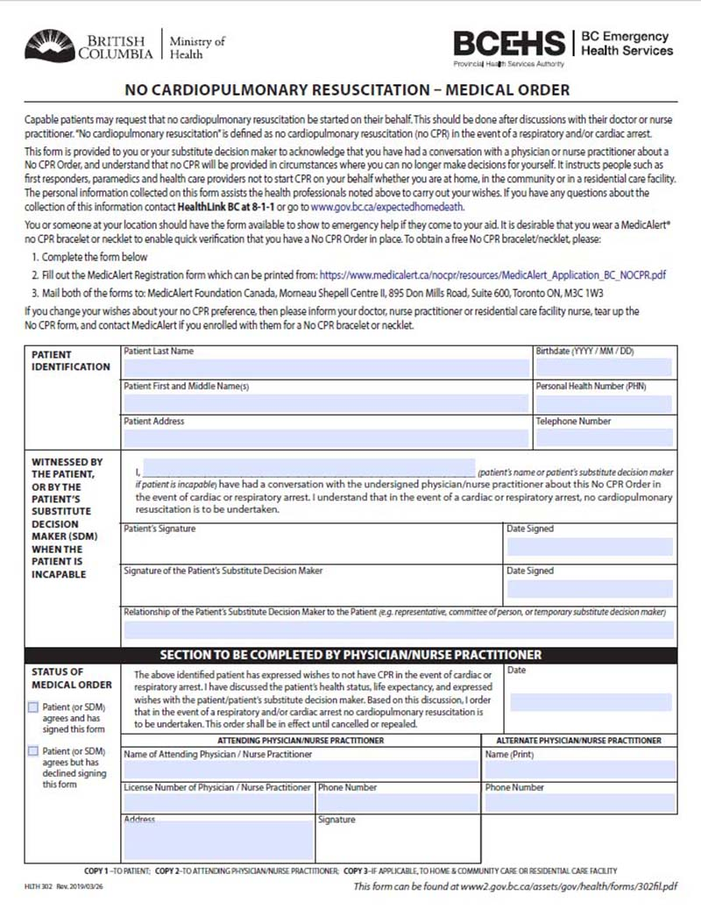
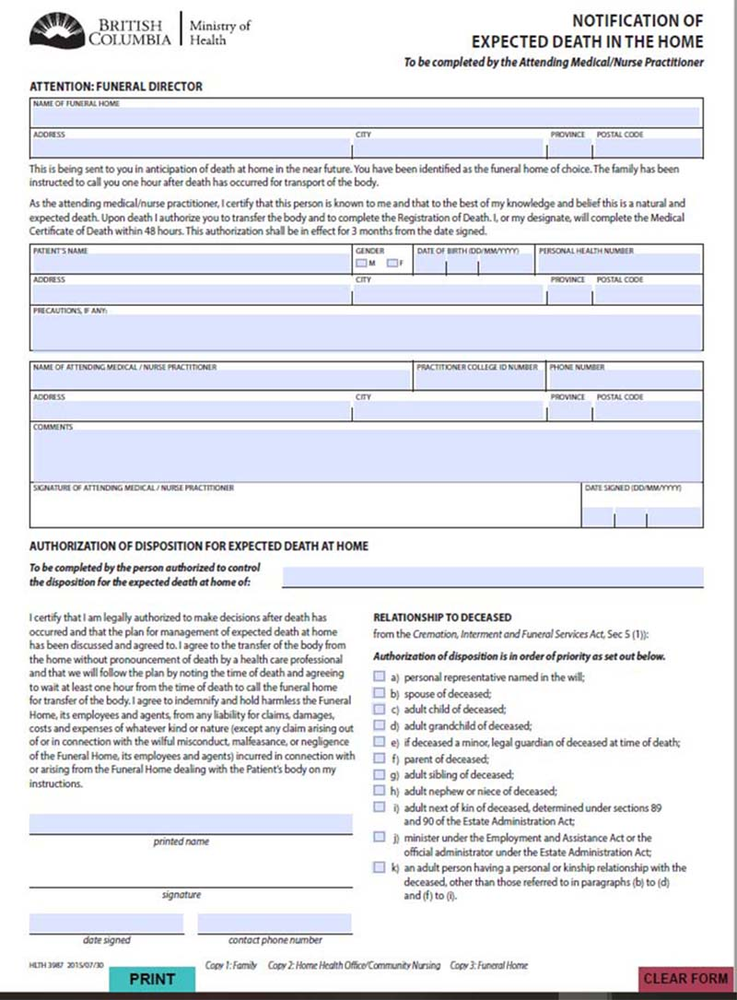

“{{quote}}“
{{author}}
If you are a “frail elder” or are over 75, no matter what your state of health, getting your plans in order is something you
just need to do. A “frail elder” may mean that you are still of sound mind and health but you do need help with your daily care,
meals and house-keeping.
Ideally you should have filled out an advance care plan and stored it in a place for your family and
the medical team to find and follow. Choosing who you want as your health care advocate is also
essential
You may also want to fill out a DNR (Do Not Resuscitate) or No CPR form. This tells Paramedics and the
medical team that you do not wish to be revived through artificial respiration methods. This is a heavy decision to make but
being informed of the facts about CPR and Do Not Resuscitate procedures and outcomes will help give you the perspective you
need to make these decisions.
If you don't make your wishes known, your doctor and loved ones may face some tough decisions. In an emergency, you would
probably receive CPR. Then you could be placed on life support, even if you didn't want it. Your doctor and family may have a
hard time deciding how to continue your medical care. Also, it may be very hard for your loved ones to decide when to stop life
support.
If you are at a stage in your life where you would not want any of these life-prolonging measures administered, you can take back
some control by signing the following forms. There is no guarantee that they will be followed - as doctors are in the business of
keeping people alive - but it does give you more control over these decisions than if you do not make your choices known.
You can choose to receive CPR or be put on a ventilator if your heart or breathing stops. Being put on a ventilator is sometimes referred to as "being put on life support." CPR doesn't always work to resuscitate people, or "bring them back". And the older and sicker you are, the less likely it is to work. Here are some of the issues to consider:

This form from the Govt of B.C. website (gov.bc.ca) states::
"Capable patients may request that no cardiopulmonary resuscitation be started on their behalf. This should be
done after discussions with their doctor or nurse practitioner. No "cardiopulmonary resuscitation" is defined as no cardiopulmonary
resuscitation (no CPR) in the event of a respiratory and/or cardiac arrest.
This form is provided to you or your Substitute Decision Maker or Representative Section-9 representative to acknowledge that
you have had a
conversation with a doctor or a nurse practitioner about a No CPR Order, and understand that no CPR will be provided in
circumstances where you can no longer make decisions for yourself. It instructs people such as first responders, paramedics and
health care providers not to start CPR on your behalf whether you are at home, in the community or in a residential care
facility.
The personal information collected on this form assists the health professionals noted above to carry out your wishes.
If you have any questions about the collection of this information contact Health Link BC at 8-1-1 or go to
www.gov.bc.ca/expectedhomedeath."
You or someone at your location should have the form available to show emergency help if they come to your aid. It is desirable
that you wear a MedicAlert or No CPR bracelet or necklet to enable quick verification that you have a No CPR Order in place."
This form goes on to say that you can request a free No CPR bracelet or necklet by filling out this form, by also filling out a
MedicAlert Registration form and mailing them to the appropriate place.
This form must be signed by you if you are still capable or by your advocate if you are no longer capable. It must also
be signed by your Doctor or Nurse Practitioner who are agreeing to the order after having had a conversation with either you or
your Representatives.
If you wish to download the form you can do so here at:
No CPR Request Form.
To order a free Medic Alert® - No CPR bracelet or 'necklet' you also need to download and complete a form called:
No CPR Bracelet. The link at this time is broken so not provided here.
If you change your mind you need to let your physician, care-givers and family know, tear up the No CPR form and let Medic Alert
know you have reversed your decision.
You have lived in your home and you want to know if you can also die there when the time comes. Your family may be pressuring you
to move into a care home, but you may wish to stay at home till the very end. In this case you should know about E.D.I.T.H.
(Expected Death in the Home).
If feasible filling out the E.D.I.T.H. form makes your wishes known to both your family and the medical team.
You have the choice to die at home if the request is a reasonable one, if your family supports it and if approved by your Doctor.
You must have completed the 'No CPR Request' Form in order to pursue this avenue. To read about the
implications of having CPR performed on yourself please see the Consider CPR page.
Relatives and family that are permitted to take on the role of disposition of the body under the Cremation, Interment and Funeral
Services Act, Sec 5 (1)) after death include in the following order of priority:
RELATIONSHIP TO DECEASED
Completing this form allows a Funeral Director to remove the body from a home without pronouncement of death. Pronouncement of
death is not required by BC Law, although if possible having a nurse practitioner or doctor do so is considered sound medical
practice.
There may be circumstances when pronouncement is difficult or families choose to waive pronouncement. If a person dies in British
Columbia, the death must be registered with the Vital Statistics Agency. A Medical Certificate of Death form is completed by the
physician within 48 hours after a death. The medical certificate of death is forwarded to the funeral director who will register
the death. The funeral director can then issue a death certificate and burial permit.

This form from the Govt of B.C. website (gov.bc.ca) is to be filled out by the Attending Medical/Nurse Practitioner. This top
part of the form is for the Practitioner to acknowlede the Funeral Home that is to accept the body and states:
"This is being sent to you in anticipation of death at home in the near future. You have been identified as the funeral home of choice. The family has been
instructed to call you one hour after death has occurred for transport of the body.
As the attending medical/nurse practitioner, I certify that this person is known to me and that to the best of my knowledge and belief this is a natural and
expected death. Upon death I authorize you to transfer the body and to complete the Registration of Death. I, or my designate, will complete the Medical
Certificate of Death within 48 hours. This authorization shall be in effect for 3 months from the date signed."
The family member given the authority to dispose of the body must agree to the following:
"I certify that I am legally authorized to make decisions after death has
occurred and that the plan for management of expected death at home
has been discussed and agreed to. I agree to the transfer of the body from
the home without pronouncement of death by a health care professional
and that we will follow the plan by noting the time of death and agreeing
to wait at least one hour from the time of death to call the funeral home
for transfer of the body. I agree to indemnify and hold harmless the Funeral
Home, its employees and agents, from any liability for claims, damages,
costs and expenses of whatever kind or nature (except any claim arising out
of or in connection with the wilful misconduct, malfeasance, or negligence
of the Funeral Home, its employees and agents) incurred in connection with
or arising from the Funeral Home dealing with the Patient’s body on my
instructions."
You can download the
A Notification of an Expected Death in the Home form here. It must be completed by the your physician or a nurse
practitioner and then sent to the funeral home before your death.
There is also a
Private Transfer Permit
form that allows family to transport their loved one"s body to the funeral home or crematorium. This may seem strange, but it
allows families to gather and have more time with the deceased, perhaps to have a wake or some other kind of ritual.
(Please note that web pages can and may be moved at any time but this download link was valid at time of this publication.